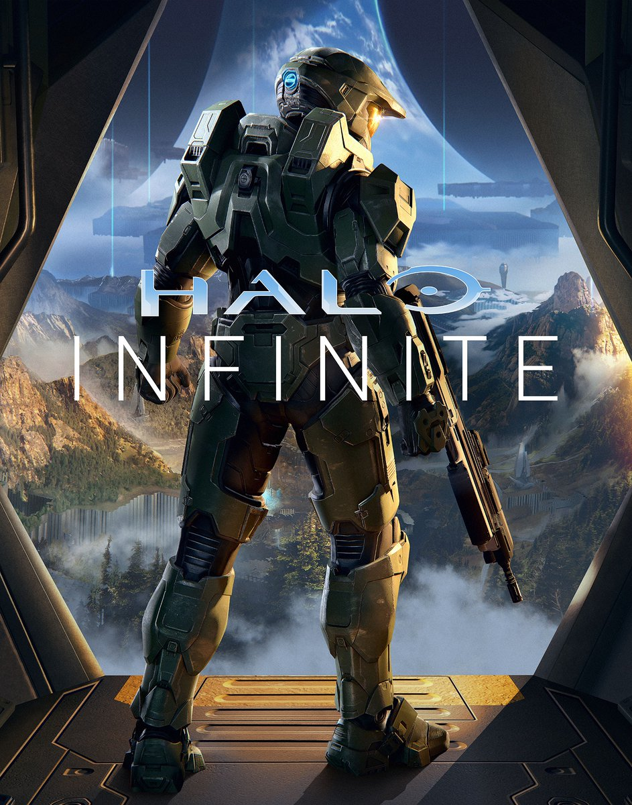

Halo Infinite
 Mas detalles..El desarrollo de las partidas es dinámico e intuitivo y siempre hay un asunto que atender. A veces se trata de un aliado que necesita cobertura, otras es el riesgo de perder el control de una zona y luego está la siempre tentadora oportunidad de derribar a un rival de la nave que pilota, ocupar su puesto y elevar el nivel de destrucción desatado en pantalla.
Porque la manera en la que el multijugador de Halo Infinite alcanza la excelencia se debe a un conjunto de elementos muy bien ensamblados y, pese a que el aspecto técnico juega a su favor y favorece el ritmo de las partidas, el peso del conjunto reposa en la variedad de armas, el sobresaliente diseño de niveles de todos los tamaños y una variedad de modos absolutamente intachable.